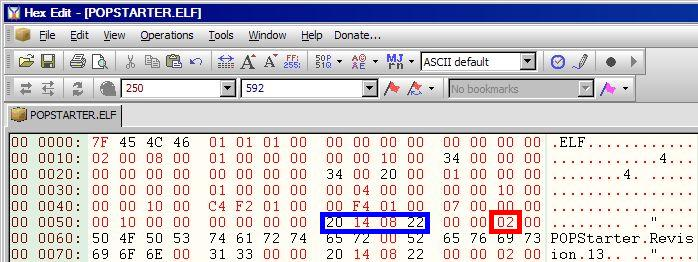
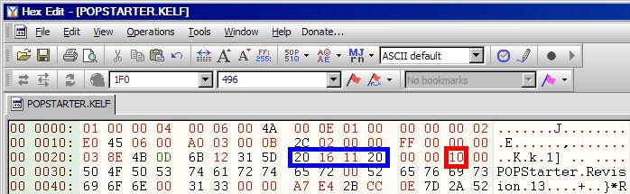

Version
📎 Recovered from the ShaolinAssassin wiki · snapshot 20240907003621
POPStarter version
A tip to know what version of POPStarter you are using…
Open POPSTARTER.ELF file with a hex editor and look at offset $59 (blue on the picture the below the table) : it’s the build date. In red, starting at offset $5E is the build ID. With these two informations, you can determine what version you are currently using.
Notes :
-
the build ID did not change from Beta 1 to Beta 7 (0x06) ;
-
most protos have the same build ID (0xFE) :
-
some protos doesn’t have a build date and build ID.
| Version | Build date YY YY MM DD (blue) | Build ID (red) |
| Rev 13 Beta 20190605 (Final release) | 20 19 06 05 | |
| Rev 13 Beta 20190104 | 20 19 01 04 | |
| Rev 13 Beta 20180924 | 20 18 09 24 | |
| Rev 13 Beta 20180922 | 20 18 09 22 | |
| Rev 13 Beta 20180921 | 20 18 09 21 | |
| Rev 13 Beta 20180920 | 20 18 09 20 | |
| Rev 13 RIP 06 | 20 17 10 20 | 0x06 |
| Rev 13 Prototype 9 | 20 17 10 08 | 0xFE |
| Rev 13 Prototype 8 | 20 17 10 03 | 0xFE |
| Rev 13 Prototype 7 | 20 17 07 03 | 0xFE |
| Rev 13 Prototype 6 | 20 17 06 24 | 0xFE |
| Rev 13 Prototype 5 | 20 17 06 15 | 0xFE |
| Rev 13 Prototype 4 | 20 17 05 31 | 0xFE |
| Rev 13 Prototype 3 | 20 17 05 30 | 0xFE |
| Rev 13 Prototype 2 | 00 00 00 00 | 0x00 |
| Rev 13 Prototype 1 | 00 00 00 00 | 0x00 |
| Rev 13 WIP 06 Beta 17 | 20 17 01 28 | 0x11 |
| Rev 13 WIP 06 Beta 16 | 20 16 11 20 | 0x10 |
| Rev 13 WIP 06 Beta 15 | 20 16 09 19 | 0x0F |
| Rev 13 WIP 06 Beta 14 | 20 16 07 23 | 0x0E |
| Rev 13 WIP 06 Beta 13 | 20 15 12 07 | 0x0D |
| Rev 13 WIP 06 Beta 12 | 20 15 11 24 | 0x0C |
| Rev 13 WIP 06 Beta 11 | 20 15 11 11 | 0x0B |
| Rev 13 WIP 06 Beta 10 | 20 15 10 26 | 0x0A |
| Rev 13 WIP 06 Beta 9 | 20 15 10 24 | 0x09 |
| Rev 13 WIP 06 Beta 8 | 20 15 10 23 | 0x08 |
| Rev 13 WIP 06 Beta 7 | 20 15 07 28 | 0x06 |
| Rev 13 WIP 06 Beta 6 | 20 15 07 27 | 0x06 |
| Rev 13 WIP 06 Beta 5 | 20 15 07 14 | 0x06 |
| Rev 13 WIP 06 Beta 4 | 20 15 07 13 | 0x06 |
| Rev 13 WIP 06 Beta 3 | 20 15 07 12 | 0x06 |
| Rev 13 WIP 06 Beta 2 | 20 15 06 25 | 0x06 |
| Rev 13 WIP 06 Beta 1 | 20 15 06 22 | 0x06 |
| Rev 13 WIP 05 | 20 15 06 03 | 0x05 |
| Rev 13 WIP 04 | 20 15 05 31 | 0x04 |
| Rev 13 WIP 03 | 20 15 04 24 | 0x03 |
| Rev 13 WIP 02 | 20 14 08 22 | 0x02 |
| Rev 13 WIP 01 | 20 14 07 11 | 0x01 |
Example (pic below) : this is Rev 13 WIP 2.
For the .KELF version, the build date starts at offset $29 and the build ID at offset $2E.
Images & screenshots

